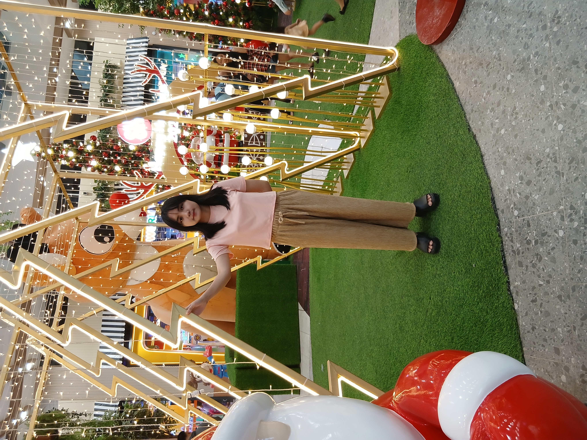

About Me
Hello! My name is Kristine Edora, Tin for short. I’m 19 years old and a full-time BA Multimedia
Studies student. I used to be an ICT student, during which time I was taught the basics of HTML, CSS, C#,
Excel, and Photoshop CS6.
I have experience in video editing, graphic design, presentation design, and web design using Google Sites.
Currently, I use DaVinci Resolve for video editing, Canva for design, and Krita for 2D art. I’m also interested
in learning 3D art in Blender one day to complement my 2D art.
In my free time, I practice drawing, play video games, exercise, watch movies and shows, and read and
write creative or fictional media-related works. I listen to instrumental music or digital sounds (e.g.,
classical music and colored noise) to help me concentrate, while I listen to vocal music to engage
my imagination.
Things I Love
💌
- Chocolate and ube
- Taho and kakanin
- Cold desserts
- Local baked goods
- Pastel color palette
- Music
- Video games
- Movies and shows
- Drawings and paintings
- Fictional prose and poetry
Passion Projects
-
Creative Writing 📝
2021–PresentI have a passion for creative writing because it serves as a way for me to share my ideas about my favorite fictional characters and pairings and improve my writing skills in an entertaining way.
I first started publishing fanfiction online when I was in elementary school, but I eventually unpublished it. It wasn’t until 2021, when I was in junior high school, that I published fanfiction without removing it from public view.
These days, I’m prioritizing other things in my life, so I haven’t published any new fanfiction this year, but I would like to return to writing fanfiction again.
-
Photography 📷
2023–PresentMy previous school, as a senior high school student starting in 2023, had an open, wide campus with lots of greenery, allowed phones (which I used for photography), and had more events compared to the school I attended for junior high school.
I also became a photojournalist for the school’s official publication organization, and there was no quarantine during my senior high school years, which introduced me to moments or scenes beyond my home worth capturing with a camera, along with the school’s physical attributes and events.
These factors encourage my interest in taking photos beyond selfies. Photography has become a way for me to record the interesting things in my life. However, this year, I rarely go outside my home, preventing me from encountering such photoworthy things as much as before. It doesn’t mean I completely lost interest in photography; rather, it’s not my main priority.
-
Art Study 🎨
2026 (Present)I am passionate about honing my skill in bringing out of my mind the images I imagine involving my favorite fictional characters and pairings as digital illustrations. Last year, I bought a graphics tablet to learn how to do that. But it wasn’t until this year that I started having productive art study sessions.
Moreover, I recently decided to save the drawings I made during the sessions so I can track my progress, rather than removing them to make way for other drawings on the same canvas, as I previously did.
I have also made sketches of some illustrations I would like to create one day to have a clearer vision of the areas I need to learn and to be reminded of the primary reason as to why I’m conducting art study sessions in the first place, encouraging me to keep going despite how hard and time-consuming learning art is.